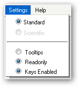

Settings Menu Header
What is the Settings Menu?

What does the Settings Menu do?
Adjusts different settings of the calculator so the user can simplify or make easier their experience with the Scientific Calculator.
Functions of the Settings Menu:
- Settings > Standard/Scientific Toggles between the Standard view and the Scientific view.The Standard view is only available at the moment.
- Settings > Tooltips Toggles whether or not a small description is shown when a mouse is over a button.
- Settings > Readonly Toggles the state of the display to be readonly or editable. This is for browsers that can't have key detection to write out the equations. This is basically for any browser other than Internet Explorer or Firefox. The calculator usually detects this but if the detection fails then the user can at least depend on this menu.